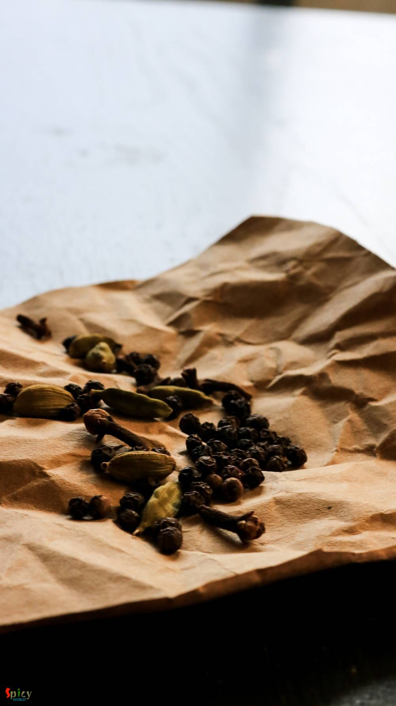
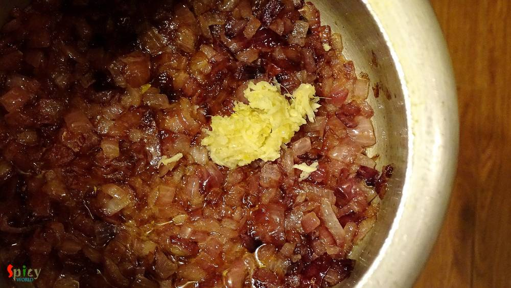
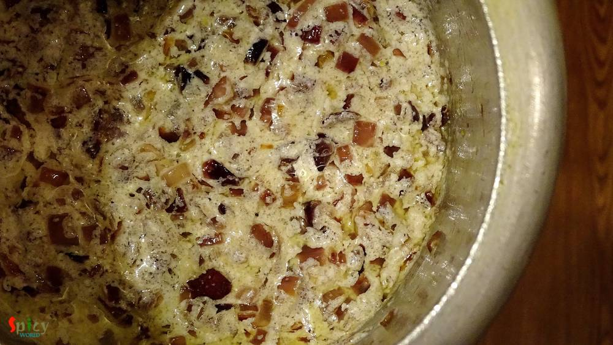

Simple and Easy Recipes
Black pepper Mutton Curry / Morich Mangsho / Gosht Kalimirch
© 2016 Spicy World, Published on: Aug 8, 2016
We both adore almost any type of mutton curry. I think, once in a week, mutton curry is must for every Bengali households. I made this curry with some plain roti / chapati in dinner last month, just didn't get time to post. Now finally I am sharing this yummy recipe with you all. If you love the strong flavour of black pepper, then believe me, 'morich mangsho' is worth giving a try. I am sure your tummy and heart will be happy after having this curry. So, let's get into the recipe ...

Ingredients
- 10 - 15 pieces of with bone mutton pieces.
- 1 big onion, finely chopped.
- 1 Teaspoon of ginger and garlic paste.
- 3 Tablespoons of hung curd / thick yogurt.
- 3 - 4 green chilies.
- Whole spices (15 - 20 black pepper corns, 5 - 6 green cardamoms, 4 - 5 cloves).
- 4 Tablespoons of white oil.
- Salt and sugar.
- Warm water.


Steps
Dry roast the whole spices in a pan for 4 - 5 minutes.
Let them cool down a bit.
Then put the roasted spices in a grinder and make semi coarse powder out of them.
Heat oil in a pan.
Add chopped onion with some salt, fry it till golden in color.
Then add ginger and garlic paste. Mix well for 2 - 3 minutes.
Beat the hung curd with a Teaspoon of sugar.
Bring the heat to low and add beaten curd. Mix well for 4 - 5 minutes.
Bring the heat again medium.
Now add half of the dry roasted powder to the masala. Mix well.
Then add washed mutton pieces and salt. Mix well for 20 minutes.
Then add some warm water and cook till the meat becomes tendor.

Lastly add some sliced green chilies and the remaining dry roasted powder. Simmer for 4 - 5 minutes.
Turn off the heat, let it rest for 2 - 3 minutes, then serve.
Your black pepper mutton curry is ready ...
Enjoy this hot with paratha, naan or roti ...
")